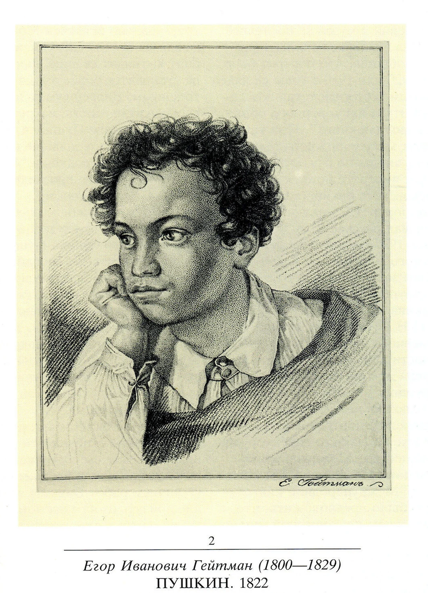

Alexander Pushkin (1799–1837) holds an unparalleled place in Russian culture as the founder of modern Russian literature and a cornerstone of national identity. His influence extends far beyond his literary achievements, deeply shaping Russian language, thought, and artistic tradition.
Pushkin celebrated Russian folklore, history, and traditions. His narratives and characters often embody the spirit of the Russian people, contributing to a sense of national identity.
Genre innovation 1: His literary fairy tales in verse, such as "Tale of Tsar Saltan" (written in trochaic tetrameter 1831), elevated Russian poetry to a new level of artistic excellence.
Pushkin innovated Russian verse and established iambic tetrameter as the classical Russian poetic meter.
Genre innovation 2: fantastic tales set in St. Petersburg, such as "The Queen of Spades" (1833) showcase Pushkin's innovation in short fiction. This story established Petersburg tradition in Russian literature. "Queen of Spades" inspired Fedor Dostoevsky to write his famous novel Crime and Punishment (1866).
Alexander Pushkin, the father of modern Russian literature, was of African origin. Today most scholars agree that that his great-grandfather was actually from Cameroon. Alexander Pushkin himself was very proud of his African ancestry. Here is an article about Pushkin's African ancestry.

Fig.1 - Portrain of young Pushkin by artist Egor Geitman (1822).